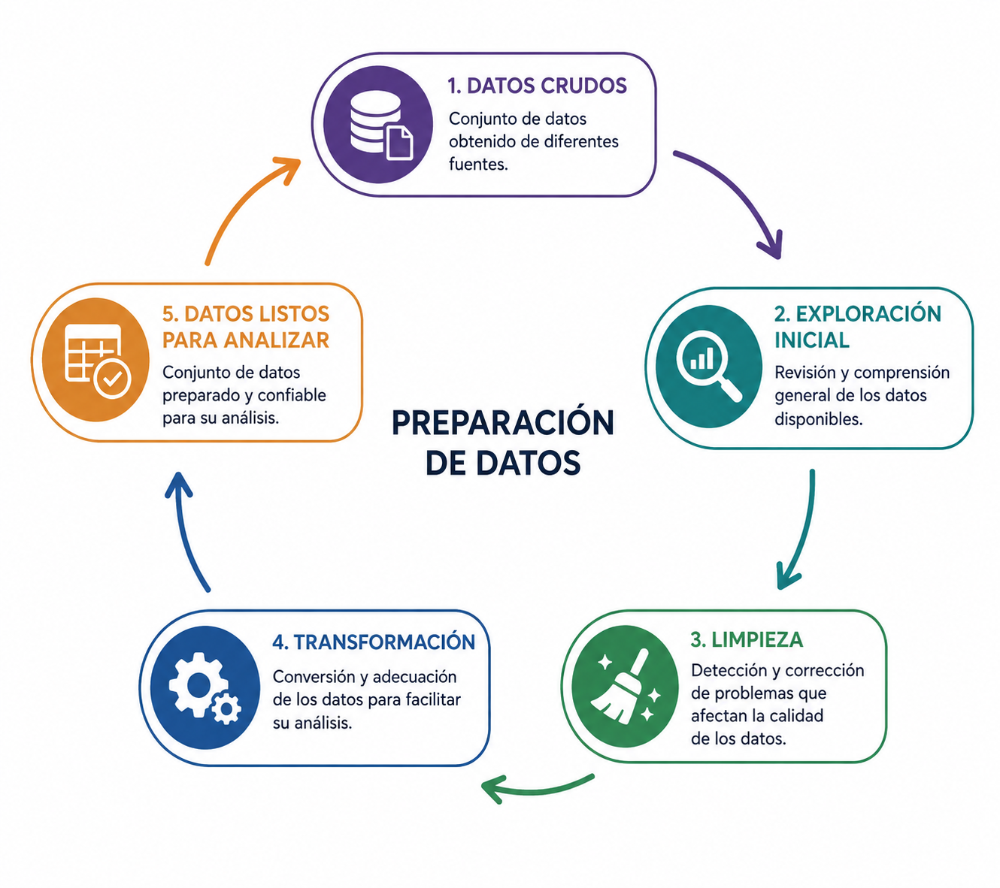

Aprendizaje supervisado
Preparación de datos
Introducción
Los datos obtenidos de diferentes fuentes rara vez están listos para analizarse. Antes de utilizarlos, es necesario prepararlos para mejorar su calidad y facilitar su procesamiento.
¿Qué es la preparación de datos?
La preparación de datos es el conjunto de actividades que transforman datos crudos en un conjunto de datos listo para su análisis.
Su objetivo es mejorar la calidad, consistencia y utilidad de la información.

Fuente: Imagen generada con ChatGPT.
Exploración inicial
El primer paso consiste en comprender el conjunto de datos y detectar posibles problemas antes de realizar cualquier modificación.
Ejemplos
- Identificar el tipo de cada variable.
- Revisar el número de registros.
- Detectar valores faltantes.
- Buscar valores inusuales.
Exploración inicial con Python
Las bibliotecas de análisis de datos proporcionan funciones que permiten explorar rápidamente la estructura y calidad de un conjunto de datos.
Limpieza de datos
La limpieza busca corregir problemas que puedan afectar la calidad de los datos y, por lo tanto, los resultados del análisis.
Ejemplos
- Eliminar registros duplicados.
- Corregir errores de captura.
- Tratar valores faltantes.
- Detectar valores atípicos.
Limpieza de datos con Python
Las bibliotecas de análisis de datos ofrecen funciones para corregir algunos de los problemas más comunes encontrados durante la exploración.
Transformación de datos
Una vez limpios, los datos pueden transformarse para facilitar su análisis y procesamiento.
Ejemplos
- Convertir tipos de datos.
- Normalizar o escalar variables.
- Crear nuevas variables.
- Cambiar el formato de fechas.
Transformación de datos con Python
Las bibliotecas de análisis de datos permiten transformar la información para adaptarla a las necesidades de un análisis o modelo.
Datos listos para analizar
Al finalizar la preparación, se obtiene un conjunto de datos consistente y confiable que puede utilizarse para generar estadísticas, visualizaciones o modelos de aprendizaje automático.
| Transformación | Ejemplo |
|---|---|
| Conversión de tipo | "25" → 25 |
| Corrección de texto | juarez → Juárez |
| Conversión de fecha | 05/08/26 → 2026-08-05 |
| Creación de variables | precio × cantidad → total |
| Conversión de unidades | 25 °C → 77 °F |
| Codificación categórica | Sí/No → 1/0 |
Resumen
- La preparación de datos mejora la calidad de la información.
- El proceso incluye exploración, limpieza y transformación.
- Un conjunto de datos bien preparado facilita el análisis y la construcción de modelos.
Referencias
Preguntas

¿Qué sigue?
En el laboratorio aplicaremos las técnicas vistas en esta lección para explorar, limpiar y transformar un conjunto de datos utilizando Python y pandas.
- Exploración inicial del conjunto de datos.
- Limpieza de datos.
- Transformación de variables.
- Preparación del conjunto de datos para su análisis.
Modelado de Datos · UACJ